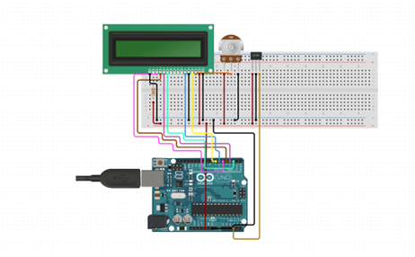

🔍 Project Overview
This digital tachometer project uses an Arduino Uno, IR sensor, and I2C 16x2 LCD display to measure and display the Rotations Per Minute (RPM) of a rotating object in real-time.
🎯 Objective
- Detect object rotations using an IR sensor or Hall-effect sensor.
- Count pulses with Arduino Uno and calculate RPM.
- Display results on a 16x2 I2C LCD and Serial Monitor.
- Create a low-cost, accurate, real-time RPM counter.
🧠 How It Works
The IR sensor detects a reflective surface or magnet each time it passes, sending a digital pulse to the Arduino. The number of pulses is counted over a one-minute period, and the RPM is calculated using the formula:
RPM = (Pulses per second) × 60
The output is shown in real-time and the final RPM is displayed after 60 seconds.
📦 Components Used
- Arduino Uno
- IR Sensor (for detecting rotation)
- I2C 16x2 LCD Display
- 10x Jumper Wires
- Breadboard (optional)
🔌 Circuit Connections
IR Sensor to Arduino Uno
| IR Sensor Pin | Arduino Pin | Description |
|---|---|---|
| VCC | 5V | Power supply |
| GND | GND | Ground |
| OUT | D2 | Digital pulse input |
I2C LCD to Arduino Uno
| I2C LCD Pin | Arduino Pin | Description |
|---|---|---|
| VCC | 5V | Power supply |
| GND | GND | Ground |
| SDA | A4 | Serial Data Line |
| SCL | A5 | Serial Clock Line |

📺 Output Example
- Serial Monitor: Rotations: 3, 6, 10... Final RPM: 60
- LCD Display: Final RPM: 60
🚗 Applications
- Engine RPM monitoring in vehicles
- Industrial motor speed feedback
- Educational demonstrations in electronics labs
- Robotics & automation systems